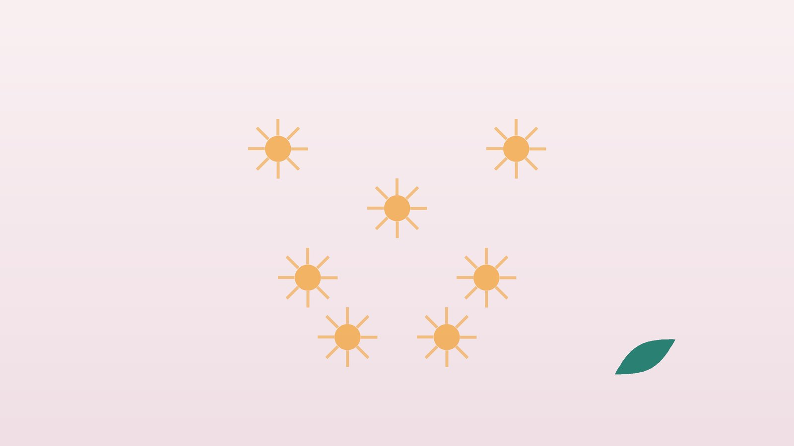

건강 칼럼 · 인천 섬유근육통 한의원
온몸이 쑤시고 피곤하다면, 섬유근육통 한방 관리

나의 통증, 이런 모습인가요?
- 목, 어깨, 등, 허리, 팔다리 여러 곳이 돌아가며 쑤신다
- 통증이 3개월 넘게 이어지고 있다
- 여덟 시간을 자도 몸이 두들겨 맞은 듯 개운하지 않다
- 기억력과 집중력이 떨어져 머리가 안개 낀 것 같다
- 가벼운 압박이나 옷깃 스침에도 아프게 느껴진다
- 병원 검사에서는 특별한 이상이 없다는 말을 들었다
이 체크리스트는 진단 도구가 아니라 상담이 필요한지 가늠해 보는 참고용입니다.
섬유근육통은 어떻게 진단하나요?
섬유근육통은 근육이나 관절이 망가지는 병이라기보다, 통증 신호를 처리하는 뇌와 척수가 지나치게 예민해져 작은 자극도 크게 느끼는 상태로 이해됩니다. 미국류마티스학회(ACR)의 2010/2011년 기준을 2016년에 개정한 진단 기준(Wolfe 등)은 몸을 19곳으로 나눠 지난 1주 동안 아팠던 곳의 수를 센 광범위 통증 지수(WPI)와, 피로·자고 나도 개운치 않음·인지 증상의 정도에 두통·아랫배 통증·우울감 여부를 더한 증상 중증도 점수(SSS)를 함께 봅니다.
광범위 통증 지수가 7점 이상이면서 증상 중증도 점수가 5점 이상이거나, 통증 지수가 4~6점이라도 증상 점수가 9점 이상이면 기준에 맞습니다. 여기에 통증이 몸의 다섯 영역 중 네 곳 이상에 퍼져 있고, 비슷한 정도로 3개월 넘게 이어져야 합니다. 2016년 개정판은 다른 질환이 함께 있어도 섬유근육통 진단이 따로 성립한다고 밝혔습니다.
류마티스·갑상선 질환을 먼저 확인해야 하는 신호
- 손가락이나 손목 관절이 붓고 아침에 한 시간 넘게 뻣뻣하다
- 열이 나거나 얼굴에 붉은 발진, 입안 궤양이 반복된다
- 추위를 유난히 타고 체중이 늘며 피부가 건조해졌다 (갑상선기능저하증)
- 50세 이후 어깨와 엉덩이 주변이 갑자기 뻣뻣해졌다 (류마티스 다발근통)
- 근육에 힘이 빠져 계단을 오르거나 머리를 빗기 어렵다
- 이유 없이 체중이 줄고 밤에 땀이 흠뻑 난다
이런 신호가 있으면 류마티스내과나 내과에서 염증 수치(ESR·CRP), 류마티스 인자, 갑상선 기능(TSH), 근육 효소 같은 혈액 검사를 먼저 받아 보세요. 갑상선 약을 이미 드시는 분은 한방 치료를 받는 동안에도 약을 임의로 끊지 마세요.
한의학은 섬유근육통을 어떻게 보나요?
『황제내경』 소문 비론(痺論)은 '바람·찬 기운·습한 기운 세 가지가 섞여 들어와 합쳐지면 비가 된다(風寒濕三氣雜至合而爲痺)'고 하였습니다. 기혈이 막혀 몸 곳곳이 저리고 쑤시는 이 비증(痺證), 그중에서도 통증이 위아래로 옮겨 다니는 주비(周痺)의 모습이 섬유근육통과 많이 닮았습니다.
다만 섬유근육통은 날씨보다 마음의 긴장과 수면 부족에 더 크게 흔들린다는 점에서, 한의학은 감정이 뭉쳐 기의 흐름이 막힌 간기울결(肝氣鬱結)과 오랜 피로로 근육을 적셔 줄 혈이 모자란 기혈양허(氣血兩虛)를 함께 봅니다. 그래서 통증을 직접 푸는 치료와 몸의 바탕을 채우는 치료를 함께 씁니다.
나는 어떤 유형일까?
1. 간기울결(肝氣鬱結) 긴장이 통증이 되는 유형
- 이런 분에게 많아요
- 스트레스가 오래 쌓였거나 예민한 성격의 분
- 나타나는 모습
- 신경 쓰는 일이 있으면 어깨·옆구리·등이 조이듯 아프다
- 함께 오는 몸의 신호
- 한숨, 가슴 답답함, 소화 불량, 잠들기 어려움
- 진찰에서 보이는 모습
- 맥이 현(弦)하고 옆구리 아래를 누르면 답답함
- 치료 방향
- 막힌 기를 풀어 긴장을 낮추는 방향 (소요산·시호소간산 계열)
- 오늘부터 해 볼 것
- 하루 한 번 10분 복식호흡으로 어깨 힘을 빼 보세요.
2. 기혈양허(氣血兩虛) 지쳐서 쑤시는 유형
- 이런 분에게 많아요
- 출산·수술·큰 병 뒤나 과로가 오래된 분
- 나타나는 모습
- 조금만 움직여도 온몸이 무겁고 근육이 욱신거린다
- 함께 오는 몸의 신호
- 심한 피로, 어지럼, 가슴 두근거림, 얕은 잠
- 진찰에서 보이는 모습
- 얼굴빛이 창백하고 혀가 담백하며 맥이 가늘고 약함
- 치료 방향
- 기와 혈을 함께 채우는 방향 (귀비탕·팔진탕 계열)
- 오늘부터 해 볼 것
- 낮잠은 20분 안으로 하고 저녁 운동은 가볍게 하세요.
3. 풍한습비(風寒濕痺) 날씨 따라 도지는 유형
- 이런 분에게 많아요
- 비 오는 날, 추운 계절에 더 아픈 분
- 나타나는 모습
- 몸이 무겁고 관절과 근육이 시리며 아침에 굳는다
- 함께 오는 몸의 신호
- 부종감, 손발 냉증, 몸살 같은 느낌
- 진찰에서 보이는 모습
- 혀가 희고 설태가 두꺼우며 맥이 느림
- 치료 방향
- 찬 기운과 습을 몰아내고 기혈을 도는 방향 (독활기생탕 계열)
- 오늘부터 해 볼 것
- 따뜻한 물로 샤워한 뒤 스트레칭을 하세요.
4. 심신불교(心腎不交) 잠이 무너진 유형
- 이런 분에게 많아요
- 밤에 자주 깨고 새벽에 눈이 떠지는 분
- 나타나는 모습
- 통증보다 수면 장애가 먼저 시작되어 낮에 더 아프다
- 함께 오는 몸의 신호
- 가슴 열감, 입 마름, 식은땀, 불안
- 진찰에서 보이는 모습
- 혀끝이 유독 붉고 맥이 가늘면서 빠르게 뜀
- 치료 방향
- 마음을 가라앉히고 진액을 보태 잠을 돕는 방향 (천왕보심단 계열)
- 오늘부터 해 볼 것
- 잠자리에서 휴대전화를 멀리 두세요.
한의원에서는 어떻게 진찰하나요?
- 통증 지도: 몸 19곳 중 지난 1주에 아팠던 곳과 피로·수면·인지 증상을 점수로 기록합니다.
- 검사 결과 확인: 염증 수치, 갑상선 기능, 빈혈, 비타민D 등 혈액 검사 결과와 복용 중인 약을 살핍니다.
- 수면·생활 문진: 잠드는 시간, 깨는 횟수, 운동량, 스트레스 원인을 여쭙니다.
- 촉진·설진·맥진: 어깨와 등 근육의 압통을 살피고 혀와 맥으로 유형을 판단합니다.
침·약침·한약 치료는 어떻게 하나요?
1. 침 치료
- 합곡(合谷)·태충(太衝): 손등의 엄지·검지 뼈 사이 도톰한 곳과 발등의 엄지·둘째 발가락 뼈 사이 오목한 곳. 함께 쓰면 사관(四關)이라 하여 막힌 기를 풀고 통증을 진정시킵니다.
- 견정(肩井): 어깨 위 목과 어깨 끝의 한가운데. 뭉친 어깨와 등 위쪽을 풉니다.
- 족삼리(足三里): 무릎 아래 바깥쪽으로 손가락 네 마디. 기혈을 보태 지친 몸을 돕습니다.
- 신문(神門)·백회(百會): 손목 안쪽 주름의 새끼손가락 쪽, 머리 꼭대기. 마음을 가라앉혀 잠을 돕습니다.
유럽류마티스학회(EULAR)의 2016년 개정 섬유근육통 관리 권고는 운동을 가장 강하게 권했고, 침 치료는 약하게 권고되는 선택지로 포함했습니다. 효과는 사람마다 차이가 있어 통증 지도와 수면 점수로 경과를 확인합니다. 통증이 예민한 분은 가는 침을 적은 개수로 시작합니다.
2. 약침
목, 어깨, 등, 허리에서 특히 단단하게 뭉쳐 누르면 아픈 자리를 골라 약침을 놓습니다. 한 번에 많은 부위를 자극하면 다음 날 몸살처럼 아플 수 있어 부위를 나눠 진행합니다.
3. 한약
유형별 탕약으로 긴장을 풀고 기혈을 채워 잠의 깊이를 돕는 데 집중합니다. 프레가발린, 둘록세틴 같은 약이나 갑상선 약을 드신다면 알려 주시면 확인해 처방하며, 한약이 이 약들을 대신하지는 않습니다.
원장님이 네이버 블로그에 진료 이야기와 건강 정보를 꾸준히 올리고 있습니다. 더 많은 이야기는 블로그에서 확인해 보세요.
블로그 보기치료는 어떤 순서로 진행되나요?
- 첫 진료 다른 질환의 신호를 확인하고 통증 지수, 증상 점수, 수면 시간을 기록합니다.
- 1~4주 주 2회 안팎의 침 치료와 약침, 탕약으로 잠과 통증을 먼저 다루고 가벼운 걷기를 시작합니다.
- 5~12주 점수를 비교해 처방을 조정하고 운동 시간과 강도를 조금씩 늘립니다.
- 유지기 좋은 날과 나쁜 날의 패턴을 파악해 무리한 다음 날 회복하는 법을 익힙니다.
섬유근육통은 오르내림이 있는 만성 질환이라, 통증을 0으로 만들기보다 일상 기능을 되찾는 것을 목표로 몇 달 단위로 경과를 봅니다.
통증을 덜 키우는 생활 관리
- 운동은 조금씩: 걷기, 수중 운동, 실내 자전거를 하루 10분부터 시작해 2주마다 5분씩 늘립니다. 아프다고 쉬기만 하면 통증이 더 예민해집니다.
- 수면 리듬: 같은 시간에 자고 일어나며 오후 늦게는 커피를 피합니다.
- 페이스 조절: 컨디션 좋은 날 몰아서 일하지 말고 할 일을 나눠 하세요.
- 따뜻한 물: 미지근하고 따뜻한 물에 몸을 담그면 근육 긴장이 풀립니다.
- 혈자리 지압: 잠들기 전 엄지로 합곡과 신문을 10초씩 세 번 누르고 천천히 숨을 내쉬어 보세요.
다른 진료가 함께 필요한 경우
- 관절 붓기, 발진, 열이 있으면 류마티스내과 진료를 먼저 받으세요.
- 갑상선기능저하증이 확인되면 내과 치료를 함께 받고 약을 임의로 중단하지 마세요.
- 우울감이 깊어 일상이 무너졌다면 정신건강의학과 치료를 함께 받으세요.
- 코골이와 숨 멈춤이 있으면 수면무호흡 검사도 필요합니다.
자주 묻는 질문 Q&A
- Q1. 섬유근육통은 꾀병이라는 말을 들었어요.
- 섬유근육통은 국제적인 진단 기준이 있는 실제 질환입니다. 검사에서 손상이 보이지 않을 뿐 통증을 느끼는 신경계가 예민해진 상태입니다.
- Q2. 관절이 망가지나요?
- 섬유근육통 자체는 관절이나 근육을 파괴하지 않습니다. 관절이 붓는다면 다른 질환을 확인해야 합니다.
- Q3. 아픈데 운동을 해도 되나요?
- 오히려 운동이 가장 중요한 치료입니다. 숨이 약간 찰 정도로 짧게 시작해 천천히 늘리세요.
- Q4. 한약을 먹으면 진통제를 줄일 수 있나요?
- 통증과 수면이 나아지면 처방한 병원과 상의해 줄이는 분도 있지만, 처방약은 임의로 끊지 마세요.
- Q5. 갑상선 약을 먹고 있는데 한약을 함께 먹어도 되나요?
- 함께 드시는 경우가 많습니다. 약 이름과 용량을 알려 주시면 확인해 처방합니다.
- Q6. 치료는 얼마나 걸리나요?
- 보통 12주 정도 점수를 보며 경과를 판단하고, 이후에는 관리 간격을 넓혀 갑니다.
- Q7. 날씨가 나쁘면 왜 더 아픈가요?
- 기압과 기온 변화에 예민하게 반응하는 분이 많습니다. 몸을 따뜻하게 하고 그날은 활동량을 조절하세요.
- Q8. 젊은 사람도 생기나요?
- 중년 여성에게 많지만 20~30대와 남성에게도 생깁니다.
진료 안내
- 진료시간
- 평일 09:00~20:00 (점심시간 13:00~14:00)
토·일·공휴일 09:00~15:00 - 주소
- 인천광역시 서구 가경주로 46, 2층 (가정동)
인천2호선 가정중앙시장역 인근 - 주차
- 한의원 건물 바로 앞 1층 도원주차장
진료시간은 사정에 따라 바뀔 수 있으니 방문 전 전화로 확인해 주세요.
함께 읽으면 좋은 칼럼
건강 칼럼 전체 보기 →


참고 자료
- Wolfe F, et al. 2016 Revisions to the 2010/2011 fibromyalgia diagnostic criteria. Seminars in Arthritis and Rheumatism, 2016;46(3):319-329 — 원문
- Macfarlane GJ, et al. EULAR revised recommendations for the management of fibromyalgia. Annals of the Rheumatic Diseases, 2017;76(2):318-328 — 원문
- 『황제내경 소문(素問)』 비론(痺論)
- 질병관리청 국가건강정보포털 — 원문
※ 이 글은 일반적인 건강 정보이며, 개인의 상태에 따라 치료 방법과 결과는 다를 수 있습니다. 정확한 진단과 치료는 진료를 통해 결정됩니다. 침·약침 시술 후 드물게 멍, 통증 등이 생길 수 있습니다.